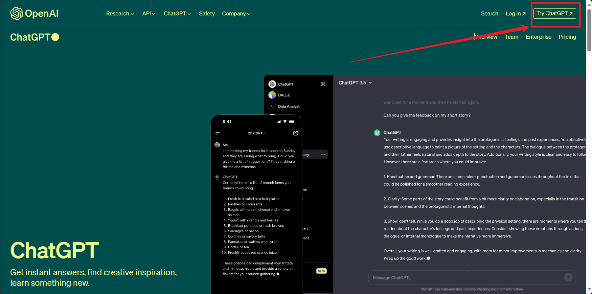
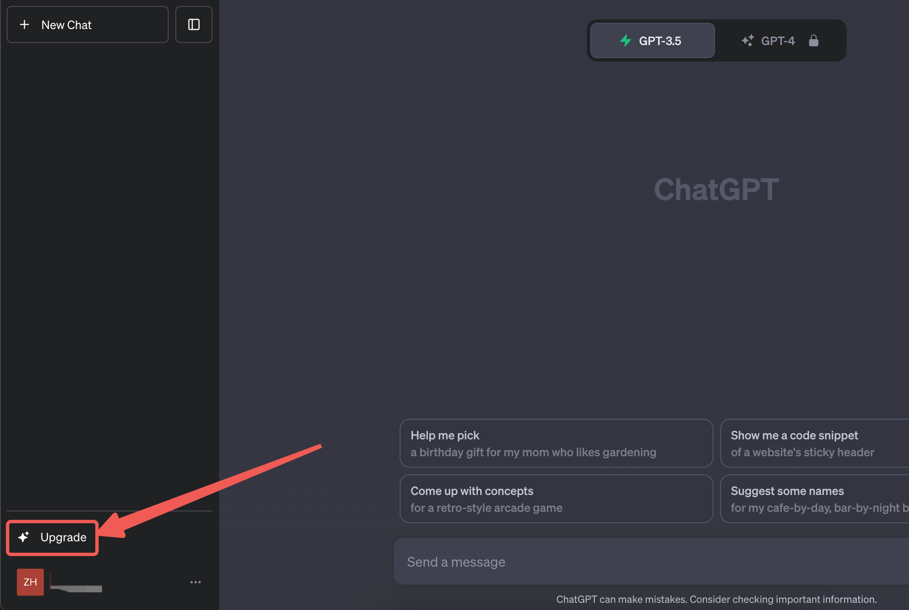
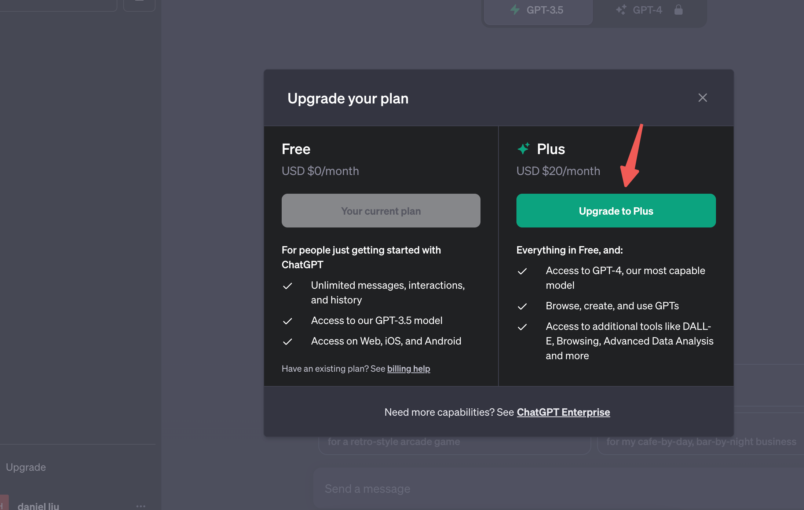
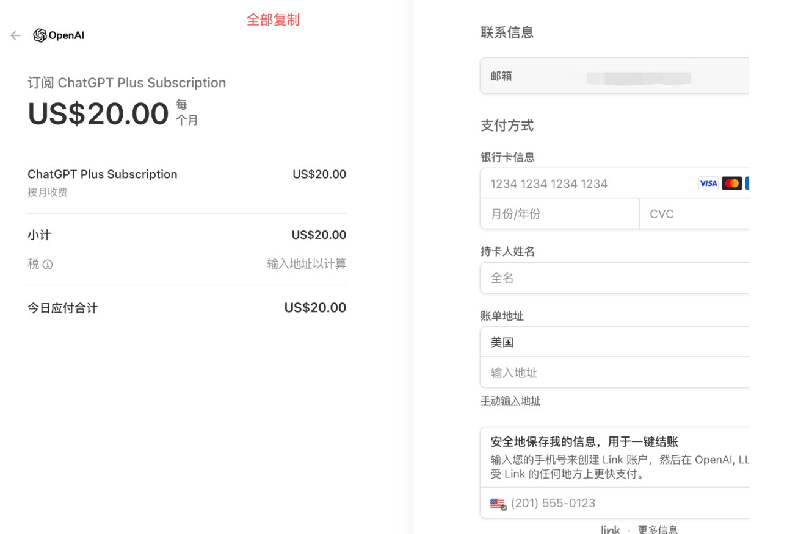
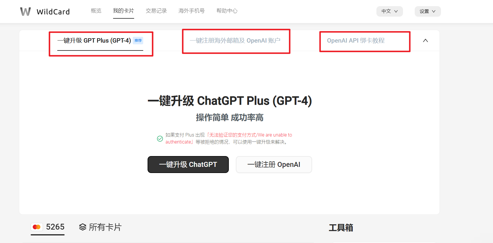
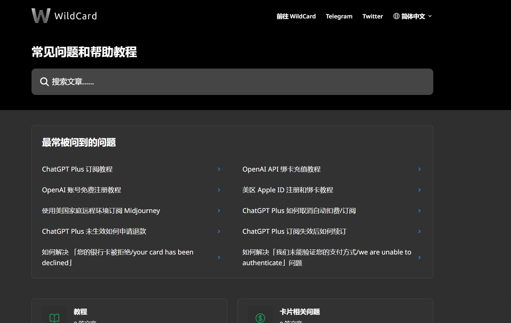
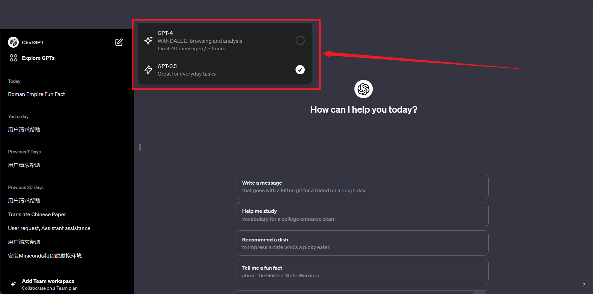

如何升级并使用ChatGPT-4
第一步：进入ChatGPT聊天界面
既然想要升级使用ChatGPT-4,那应该已经使用过了ChatGPT3.5，首先进入ChatGPT3.5聊天界面。

第二步：点击Update进行升级

点击Upgrade to Plus

第三步：进行支付
需要指出的是，目前国内的支付平台并不能直接进行支付，这也许是谷歌对中国大陆使用的限制。不过可以通过购买虚拟卡来进行支付。

目前购买虚拟卡的平台很多，开卡费用7$-15$/年不等，其中 WildCard 平台对新用户十分友好，而且价格适中，还为用户
提供了 “一键升级” 等服务。该平台开通的是有效期2年的虚拟信用卡，开卡费包含两年年费，大约100元RMB，每天成本不到2毛钱。其他费用无，根据个人需求充值。

该平台上每个服务都有详细的教程:

开虚拟卡需要一个国外的邮箱，这里我推荐使用Proton Mail，它有付费和免费两种邮箱，我们使用免费的就可以，可以参照教程如何注册proton 免费邮箱，比较简单，2分钟搞定。
第四步：使用ChatGPT4畅游吧
使用wildCard 平台的一键升级服务，大约2分钟就能升级成功，然后就可以使用ChatGPT4来搞事了，嘿嘿🤭
